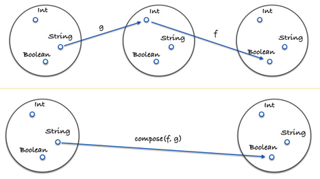

Functional JavaScript
Vitaly Kondratiev
February 2016
@vitkon
Definition
Pure function is a function where return values are only determined by the input values,
without observable side effects
expect(f(x)).toBe(f(x)); //no matter what!
Zen Buddist Koan
If a program has no observable side effects,
does it even run?
Symptoms (code smells)
- Custom names
- Looping patterns
- Glue code
- Side effects
Purity benefits
- testable
- portable
- memoizable
- parallelizable
Higher-order function
A HOF is a function that does at least one of the following:
- Takes one or more functions as an input
- Outputs a function
All the rest are first order functions
var beers = [
{
name: 'Doombar',
category: 'ale',
origin: 'England',
volume: 4,
draft: true
},
{
name: 'Kronenbourg',
category: 'lager',
origin: 'France',
volume: 6.7,
draft: true
},
{
name: 'Peroni',
category: 'lager',
origin: 'Italy',
volume: 5.1,
draft: false,
size: 330
}
];
All draft beer
https://jsbin.com/keduqoluge/2/edit?js,console
let allDrafts = [];
for (let i = 0, beersLength = beers.length; i < beersLength; i++) {
if (beers[i].draft) {
allDrafts.push(beers[i]);
}
}
VS
const allDrafts = beers.filter( beer => beer.draft );
Is it bottled?
https://jsbin.com/tilasumixu/1/edit?js,console
let bottledBeers = [];
for (let i = 0, beersLength = beers.length; i < beersLength; i++) {
bottledBeers.push({
name: beers[i].name,
isBottled: !beers[i].draft
});
}
VS
const bottledBeers = myBeers.map( beer => {
return {name: beer.name, isBottled: !beer.draft}
});
Has Ales?
https://jsbin.com/wamunijeto/1/edit?js,console
let hasAles = false;
for (let i = 0, beersLength = beers.length; i < beersLength; i++) {
if (beers[i].category === 'ale') {
hasAles = true;
break;
}
}
VS
const hasAles = beers.some( beer => beer.category === 'ale');
Average lager volume
https://jsbin.com/copufipuno/1/edit?js,console
let totalVolume = 0;
let lagerCount = 0;
for (let i = 0, beersLength = beers.length; i < beersLength; i++) {
if (beers[i].category === 'lager') {
lagerCount++;
totalVolume += beers[i].volume;
}
}
const avgLagerVolume = totalVolume / lagerCount;
VS
const lagers = beers.filter( beer => beer.category === 'lager');
const avgLagerVolume = lagers.reduce(
(prev, curr) => (prev + curr.volume), 0
) / lagers.length;
Check out these HOC
- .every()
- .some()
- .map()
- .reduce()
- .filter()
- .sort()
Definition
Giving a function fewer arguments than it expects
is typically called partial application.
Partially applying a function can remove
a lot of boilerplate code.
Extended console.log
Prefix console.log with a namespace
const log = (namespace) => console.log.bind(null, namespace);
const info = log('INFO:');
info('this is an extended console.log');
Currying
https://jsbin.com/xebuxemivi/1/edit?js,console
You can call a function with fewer arguments than it expects. It returns a function that takes the remaining arguments.
const get = _.curry(
(param, object) => object[param]
);
const getBeerName = get('name');
const beerNames = beers => beers.map(getBeerName);
Composition
Make me shout
https://jsbin.com/vocawijutu/1/edit?js,console
const _ = require('lodash');
const toUpperCase = x => x.toUpperCase();
const exclaim = x => `${x}!`;
const shout = _.flow(
toUpperCase,
exclaim
);
console.log(
shout('moar beer'); // => MOAR BEER!
);
Books
- Functional JavaScript
- Most Adequate Guide to Functional Programming
Libraries
- ramda
- lodash-fp
- lodash
- underscore
- lazy.js